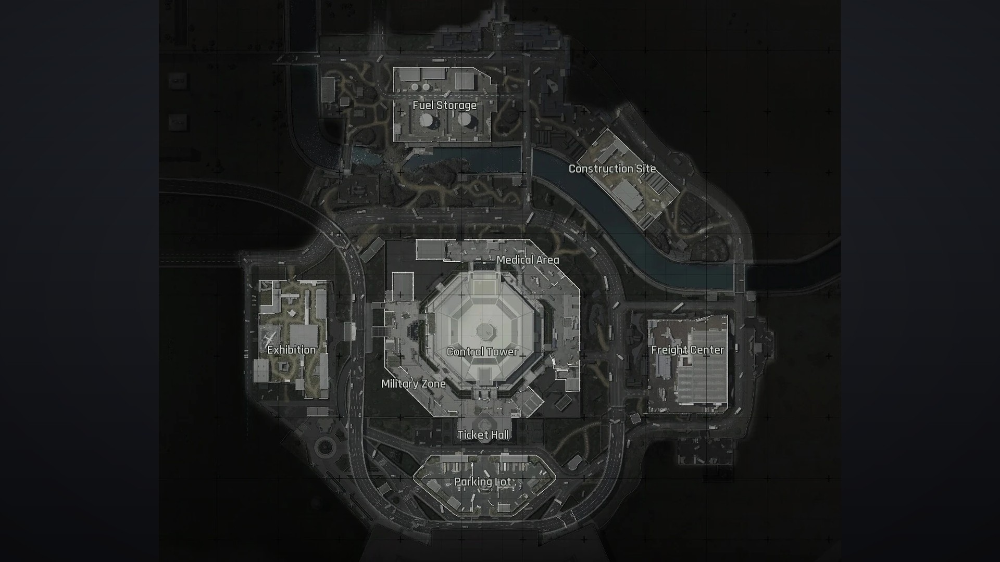

1. Vue d'ensemble
Airport est le théâtre premium de ABI : tarmac gigantesque, terminal en ruine, hangars à fret et tour de contrôle. En S7, c'est la carte du double visage : Heavy Infected Zone le jour, Zombie Endless le soir (PvE co-op, niveau 8).
2. Hotspots
- Terminal central — documents boxes, tiroirs, blueprints S7 en pagaille.
- Hangars cargo — boîtes d'armes, containers (l'or loot), 2-3 coffres selon spawn.
- Tour de contrôle — snipe nest avec vue sur tout le tarmac.
- Fret A-9 — le meilleur prix/effort de la carte, rarement contesté T+15.
3. S7 — Heavy Infected + Zombie Endless
Infected Zone (Heavy) — PvPvE
- Mutants partout dans le terminal et les hangars ; hordes déclenchables.
- Phobos est le boss — armure lourde qui tombe sous les dégâts, puis il revient plus furieux.
- Field Merchant à T+5 min : vendre libère des cases, le volume de transactions débloque l'intel de caches. Officiel
Zombie Endless — PvE coopératif
- Niveau 8 requis, escouade de 1 à 4, classes attribuées par le jeu.
- Vagues croissantes, mort permanente pour LE raid, récompense = Merit (croissance Endless).
- Marchand vend supplies et contre-mesures mutants pour tokens zombies.
Les boss d'Airport — ce que dit l'éditeur
Airport est la seule carte du jeu sans boss nommé dans les publications de MoreFun. La revue exhaustive des 483 posts de l'éditeur menée au 1er novembre 2026 ne fait apparaître aucun nom de boss pour Airport. Le texte de Saison 4 y oppose les White Wolves aux escouades Blackgold, et la zone zombie d'Airport accueille Phobos — mais c'est un boss de mode infectieux, pas un boss d'extraction.
Ce que cela signifie en jeu
Si vous cherchez un boss d'Airport en extraction classique, vous n'en trouverez pas de documenté par l'éditeur. Ce que vous trouverez :
- Phobos — le boss mutant, présent dans l'Infected Zone d'Airport en S7. C'est le seul nom de boss que l'éditeur associe à cette carte. Officiel
- Les White Wolves et Blackgold — des forces nommées, pas des boss. Ils apparaissent dans le texte de Saison 4 et parmi les ennemis IA.
4. Route recommandée
- Spawn terminal → 2. Loot fret A-9 → 3. Hangar central (attention : spawn Phobos possible) → 4. Extraction Airport West/East.
- En Heavy Infected : jamais de sprint en ligne droite — le terminal adore punir les silhouettes exposées.
Zombie Endless — le before you go
Stock 120+ balles par joueur, meds complètes, et au moins un Vector Dum-Dum par squad : les vagues 6+ fondent les T4-plates. Jouez en duo au minimum.
Les sorties d'Airport ne se valent pas : lisez l'activation avant de charger
Sur Airport, la différence entre une sortie de 10 minutes et une sortie de 25 minutes décide du profit de la journée. Une extraction n'est pas un bouton : c'est un contrat — un délai d'activation, parfois une condition, et toujours une exposition au risque qui augmente avec le temps qui passe.
| Sortie | Activation | Condition | Ce que ça implique |
|---|---|---|---|
| Drainage Pipe | 0 à 10 min | Sac à dos interdit | La sortie de secours. Vous videz votre sac avant de l'utiliser : elle sert à sauver une pockets valuable, pas un run complet. |
| Northern Outpost | 10 à 20 min | 1 élimination | Transforme un combat contre l'IA en prérequis d'extraction. Il faut tuer quelqu'un — donc s'attendre à unfight, mais seulement au moment où vous partez. |
| Cluster 15 minutes | 15 min | Minuteur de 20 s | Le meilleur compromis : une minuterie courte sur plusieurs sorties simultanées, donc toujours une option de repli. |
| Access Bridge | 25 min | — | La sortie de fin de raid. Faible densité de joueurs, mais au-delà de 20 minutes la concentration de PvP sur les dernières sorties devient forte : le risque augmente plus vite que la récompense. |
| Parking Lot Helicopter | 1 min | — | La plus rapide, et la plus violente. Réservée aux escouades coordonnées qui contrôlent la zone : en solo ou en duo, elle est rarement rentable. |
| Central Elevator | Conditionnelle | Contrôles dans la Control Tower | La sortie qui rapporte le plus, parce qu'elle débouche au cœur du loot premium. Elle se débloque en passant par la tour — donc on ne l'active pas au hasard, on l'anticipe. |
La règle de décision qui en découle est simple : ce n'est pas le loot total qui compte, c'est le Koen par minute. Une sortie à 15 minutes qui rapporte 250 000 K vaut mieux qu'une sortie à 25 minutes qui en rapporte 400 000. Et la durée du raid doit toujours être comparée au trajet qu'il reste à faire, en comptant les healed, le poids du sac, les interrupteurs à activer et les approches contestées.
Source : guides d'analyse de la communauté et retours de joueurs sur les sorties d'Airport (novembre 2026). Les délais d'activation sont rapportés par les joueurs ; ils peuvent varier selon la saison. Donnée communautaire, non publiée par l'éditeur.
Zones officielles
Libellés relevés sur la carte officielle du jeu : ces noms sont ceux affichés en jeu et repris par les codes-cle.
- Fuel Storage — Zone de stockage, Plusieurs conteneurs de loot
- Construction Site — Nombreux conteneurs de loot
- Medical Area — Loot médical, Plusieurs conteneurs de loot
- Control Tower — Point d'extraction, Loot premium, Plusieurs coffres-forts
- Exhibition — Plusieurs conteneurs de loot, Point d'extraction
- Military Zone — Loot militaire, Nombreux scavengers
- Freight Center — Nombreux conteneurs de loot, Plusieurs coffres-forts
- Ticket Hall — Plusieurs conteneurs de loot, Coffre-fort
- Parking Lot — Loot libre, Point d'extraction
Points d'extraction officiels
Liste exhaustive des sorties de la carte (noms de jeu). Les extractions vertes sont fixes ; les autres dépendent d'un vehicule, d'un abonnement ou d'une zone Nanotech.
- VIP Lounge Extraction
- Runway Extraction
- Hangar Extraction
- Service Road Extraction
Clés de la carte
Chaque clé s'use à l'usage : 1 point en Normal, 2 en Lockdown, 3 en Forbidden. Une clé à 45 de durabilité tient donc beaucoup moins longtemps en Forbidden.
| Clé | Durabilité | Débloque |
|---|---|---|
| Executive Lounge Key | 30 | — |
| VIP Reception Keycard | 30 | — |
| AOC Secret Archives Keycard | 30 | — |
| Employee Lounge Key | 30 | — |
| Fuel Storage Key | 30 | — |
| Cargo Inspection Area Key | 30 | — |
| Exhibition Uitlity Room Key | 30 | — |
| Control Area Permission Card | 30 | — |
| Ticket Hall Conference Room Key | 30 | — |
Cartes interactives
Cartes de référence
Deux ressources de référence pour aller plus loin que cette page :
- ABIBuilder — catalogue des cartes (nouvel onglet) : spawns, clés et stats de loot par carte.
- TCNO — carte interactive de Airport (nouvel onglet) : survol des zones, marqueurs d'extraction et de loot.